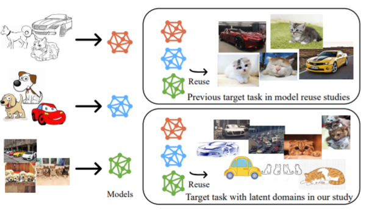

Towards Robust Model Reuse in the Presence of Latent Domains
(School-enterprise cooperation paper)

Abstract
Model reuse tries to adapt well pre-trained models
to a new target task, without access of raw data. It
attracts much attention since it reduces the learning resources. Previous model reuse studies typically operate in a single-domain scenario, i.e., the
target samples arise from one single domain. However, in practice the target samples often arise from
multiple latent or unknown domains, e.g., the images for cars may arise from latent domains such
as photo, line drawing, cartoon, etc. The methods based on single-domain may no longer be feasible for multiple latent domains and may sometimes even lead to performance degeneration. To
address the above issue, in this paper we propose
the MRL (Model Reuse for multiple Latent domains) method. Both domain characteristics and
pre-trained models are considered for the exploration of instances in the target task. Theoretically,
the overall considerations are packed in a bi-level
optimization framework with a reliable generalization. Moreover, through an ensemble of multiple
models, the model robustness is improved with a
theoretical guarantee. Empirical results on diverse
real-world data sets clearly validate the effectiveness of proposed algorithms.
[Paper]
Recommended Citations
If you find our work is helpful to your research, please feel free to cite us:
@inproceedings{DBLP:conf/ijcai/ShaoCLP21,
author = {Jie{-}Jing Shao and
Zhanzhan Cheng and
Yu{-}Feng Li and
Shiliang Pu},
title = {Towards Robust Model Reuse in the Presence of Latent Domains},
booktitle = {IJCAI},
pages = {2957--2963},
year = {2021},
}